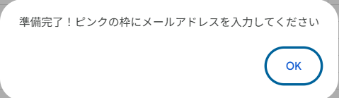
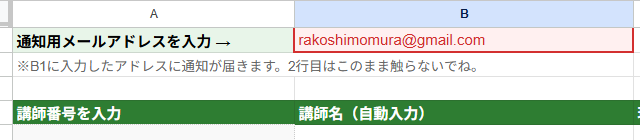
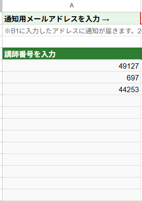
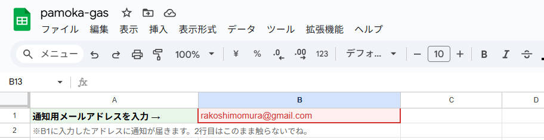
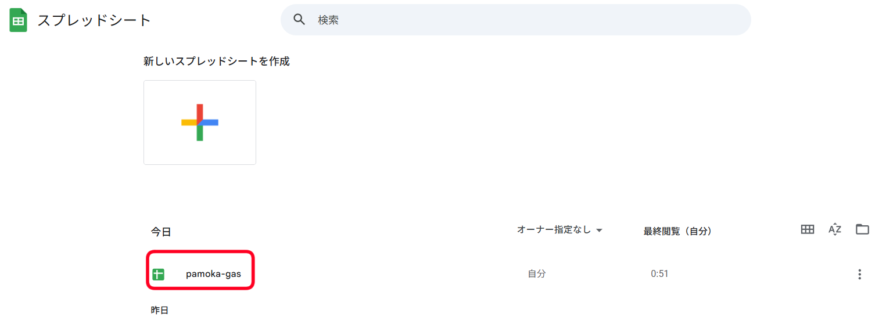
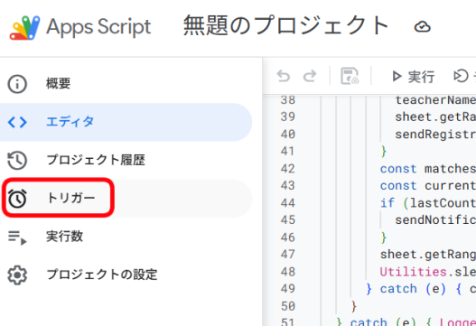
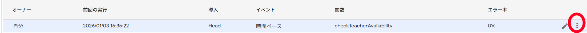
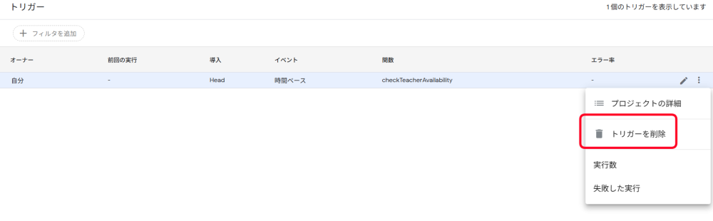

~pamoka~ DMM英会話 予約通知ツール（非公式）
pamokaは、DMM英会話の講師ページを定期チェックして「予約可」が増えたときに通知する、個人開発の無料サポートツールです（非公式）。登録したアドレスに通知メールが届きます。
このチュートリアルでは、GoogleのGAS(Google Apps Script)の設定方法を紹介します
設定はPCで実施いただく事を推奨しています。スマホでは画面が小さいため入力が難しいです。
0. 事前準備
- Googleアカウント（持っていない人は ここから無料で作成 してね！）
- DMM英会話の講師番号
※講師番号は講師のプロフィールページのURLの一番最後にある数字です。下の画像を参考にしてね

1. スプレッドシートを準備する
まずは、データを記録する「台帳」を作ります。
【スプレッドシートの開き方】
Googleの画面右上にある「点々のマーク」から、緑色の「スプレッドシート」を選んでね。

開いたら「空白（＋マーク）」を押して新しいシートを作ります。

※シートには何も書かなくて大丈夫。
2. プログラムを貼り付ける
1. スプレッドシートのメニューから「拡張機能」→「Apps Script」を選んでクリック。

2. GASの画面が開きます。

3. 元から書いてある文字を全部消します。

4. 下の「コードをコピーする📝」ボタンを押して、GASのコードをコピーします。
5. GASに貼り付けます（ショートカット：Ctrl + V）。

3. プログラムの「初期設定」をする
1.コードを保存します。フロッピーの形のボタンをクリック。

2.「デバッグ」の右隣にあるメニューから setup を選んで、「実行」ボタンを押す。

⚠️ ここで「承認が必要」という画面が出たら：

権限を確認 → 自分のアカウント → 詳細 → 安全ではないページに移動 → 全て選択 → 続行の順にクリックしてね。
※自分で作ったプログラムだから安全です！怖がらないで大丈夫。
①自分のアカウントを選択。

②「詳細」をクリック。

③「（安全ではないページ）に移動」をクリック。

④ポップアップで小さな別ウィンドウが表示されます。

⑤権限を付与する（すべてにチェックを入れて続行）。

⑥「続行」をクリック。

⑦GASの画面でプログラムが実行開始されます。

⑧スプレッドシートのタブに移動します。

⑨「準備完了~」の表示が出ているのでOKをクリックします。
4. 講師とメールアドレスを登録する
1. スプレッドシートのB1セルに、通知を受け取りたい「メールアドレス」を入力します。
2. A列の5行目（A5セル）から下に、監視したい「講師番号」を入力します。
⚠️ 【大切なお願い】
登録する講師は、最大20名までにして下さい。サイトへのアクセスが多すぎると制限がかかりエラーになる場合があるためです。
7. 定期自動監視を設定する
最後にプログラムが自動で動くようにタイマーをセットします。
1. GASの画面に戻って、今度は setupTrigger を選択。

2. 「▷ 実行」ボタンを押します。
✨ これで設定完了！
実行ログに「⏰ 定期監視を開始しました。」と出れば成功です！ブラウザを閉じても大丈夫。
一度定期監視を設定すれば、以降はこのスプレッドシートを開き、講師番号を追加・修正・削除するだけで講師の登録・削除ができます。GASの画面を触る必要はありません。
【スプレッドシートに名前を付けよう！】
※無題のままでも問題はありませんが、名前を付けておくと後でGoogleドライブから探しやすくなります。

「pamoka_gas」に名前を変えてみました。
再度開きたい時、該当のスプレッドシートがすぐ見つけられます。
番外編：監視を止めたいときは？
「もう通知はいらない」という時は、GAS画面の左にある時計マーク（トリガー）を押して、設定されているトリガーをゴミ箱マークで消します。
右端の3つの点をクリックします。
「トリガーを削除」を選択します。
講師を1人だけ消したい・トリガーの削除はややこしそうだからやりたくない、等という場合はスプレッドシートから講師番号を削除するだけでも監視は止まります。
A列を消す場合は、B列・C列も合わせて削除してください(誤作動防止)。
※⚠️ 注意！スプレッドシートを削除するだけでは、自動監視（タイマー）は止まりません！ そのままにすると「エラーが発生しました」というメールが毎日届くようになってしまいます。 必ずトリガーを削除してから、シートを削除してください。